2
High — user-visible bugs worth a correctness slice (raw slugs, float axis labels).
Longevity Health Tracker · Frontend UI/UX review
Captured 2026-09-22 · 11 routes × dark / light / sand × desktop 1440px / mobile 390px = 66 mocked-API screenshots. Method: live code audit + Playwright captures against the dev server (no backend writes) + existing layout-suite results. Annotate anything in this page or answer the triage forms at the bottom to queue follow-up work.
Longevity is a sellable health-tracking product for health-conscious 25–45 year-olds and quantified-self users: log metrics manually, sync Samsung Health via an Android companion app (Samsung Health → Health Connect → app → backend), and read long-term trends on a premium dark-mode dashboard. Non-negotiables: write consistency (PostgreSQL ACID), zero data loss, OWASP coverage, GDPR export/delete, <200ms p95 analytics reads.
| Route | View | Job of the page | Entry points |
|---|---|---|---|
| /login · /register | Auth (public) | Sign in / create account; focused 440px card, theme switcher above the form | Logged-out nav, post-register redirect, expired-session redirect |
| / | Dashboard | Metric rail (Sleep, Steps, Weight first), Pro Insights, Recent Entries + filter | Logo, post-login landing, 404 fallback link |
| /metrics | Metrics catalog | Active definitions, custom create / edit / deactivate / reactivate, archived section | Header nav, dashboard card links |
| /metrics/$slug | Metric detail | Summary, Chart.js daily trend + Oldest/Latest/Delta, full entry history with edit/delete, Add entry | Catalog rows, dashboard cards, consistency day-cells (?date= deep links) |
| /analytics/sleep | Sleep Insights (Pro) | 7-night bars, shortfall estimate, adjustable + saved nightly target | Pro Insights, Sleep detail page |
| /analytics/weight-steps | Weight × Steps (Pro) | Dual-axis overlay (steps bars + weight points + 7-day average), 7/30/90d | Pro Insights, Weight/Steps detail pages |
| /analytics/consistency | Consistency (Pro) | 7-day UTC presence grid per metric, Needs-attention gaps, date deep links | Pro Insights |
| /settings | Settings | Current plan + capabilities, Stripe Checkout / Customer Portal, CSV export dialog, account email | Header nav, Free-user “View plans” links |
| /not-found | Page not found | Shared-shell 404 with “Back to dashboard” | Any unknown URL |
Shared shell (src/routes/__root.tsx): sticky blurred header, 70rem max width, Dark/Light/Sand selector,
Dashboard / Metrics / Settings nav, user-initial chip, Logout. Free users never see Pro links; Django returns 403 independently.
High — user-visible bugs worth a correctness slice (raw slugs, float axis labels).
Medium — polish / empty-state / rhythm issues, incl. the 13 failing layout tests.
Low / Info — doc drift, micro-copy, plus corrected H1 (devtools are prod-gated by the library itself).
Solid — theme engine, dialog a11y, skeletons + reduced-motion, UTC discipline, Pro gating.
| Sev | View | Finding | Evidence |
|---|---|---|---|
| INFO | All pages (local dev only) | H1 · Router devtools — corrected: NOT a production leak. Review of the installed
@tanstack/react-router-devtools shows process.env.NODE_ENV !== "development" ? () => null —
production/staging builds render nothing, as you noted. It only overlays local dev-server screens (and covered the Consistency link
in mobile captures). Optional: gate explicitly in __root.tsx:47 for cleaner local review screenshots; otherwise no action. |
node_modules/@tanstack/react-router-devtools/dist/esm/index.js:5; dashboard-dark-mobile.png (dev-only badge) |
| HIGH | Weight × Steps | H2 · Breadcrumb leaks raw slugs. Shows body_weight × steps instead of “Body Weight × Steps”. Every other breadcrumb uses human names. |
analytics-weight-steps-dark-desktop.png |
| HIGH | Metric detail (custom) | H3 · Y-axis float artifacts. A single score of 7 renders ticks 7.200000000000001 / 7.000000000000001 / 6.800000000000001…. The known follow-up in 20-frontend-development.md is confirmed live. Only body_weight is normalized; unknown/custom metrics are not. |
metric-custom-long-name-dark-mobile.png |
| MED | All signed-in | M1 · 13 layout tests fail on title rhythm. titleY differs by ~36px between Dashboard and Metrics: breadcrumb / description / action slots shift the H1. Decide: relax the test to per-template rhythm, or reserve fixed slots in PageHeader. |
layout.spec.ts:246; dashboard vs metrics screenshots |
| MED | Metric detail · Weight × Steps | M2 · Single-point charts look degenerate. One 84kg entry → y-axis 79–89kg with one dot, “84 TO 84 KG”, Oldest = Latest, Delta 0. Comparison shows one full-width bar and a 0–90kg weight axis despite the “axis focuses on observed range” doc claim. | metric-body-weight-dark-desktop.png; analytics-weight-steps-dark-desktop.png |
| MED | Login / Register (mobile) | M3 · Large void above the auth card on tall viewports — the centered 440px panel starts mid-screen with ~250px of empty header space. | login-dark-mobile.png |
| MED | Settings | M4 · “No paid billing period yet.” renders as a large green headline inside an otherwise empty billing panel — reads like a celebration of missing data. | settings-dark-desktop.png |
| MED | Sleep Insights | M5 · Zero shortfall shouts “0h 00m” in huge orange alert type. Zero is the best outcome; consider neutral/green treatment or “On target”. | analytics-sleep-dark-desktop.png |
| LOW | Dashboard | L1 · Doc drift: 10-wireframes promises a “brief sleep review prompt” in Pro Insights; the card shows only three links. |
dashboard-dark-desktop.png |
| LOW | Consistency | L2 · Day cells show cryptic single letters (T/W/T/F/S/S/M). Accessible via aria-labels, but two-letter abbreviations would scan better. | analytics-consistency-light-desktop.png |
| LOW | Metric detail (mobile) | L3 · Long metric names wrap hero buttons to two lines (“Add Personal wellbeing and energy score entry”). Acceptable; confirm intentional before clamping. | metric-custom-long-name-dark-mobile.png |
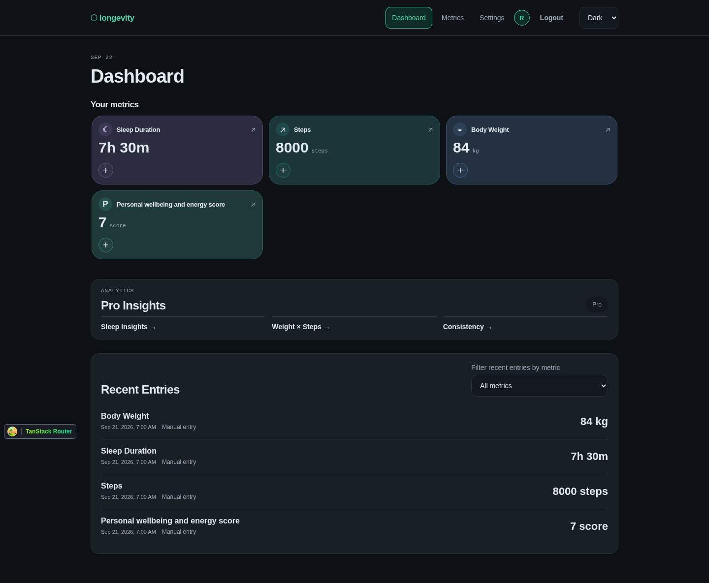
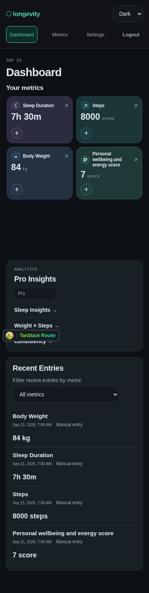
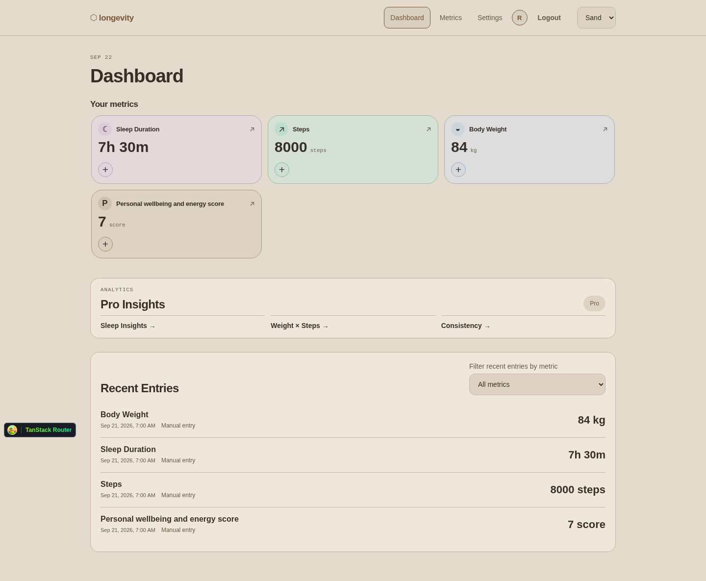
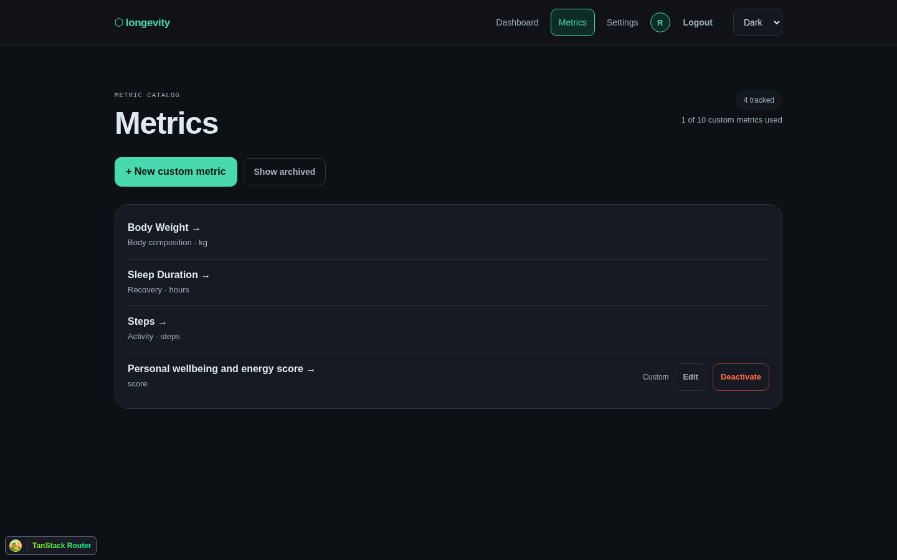
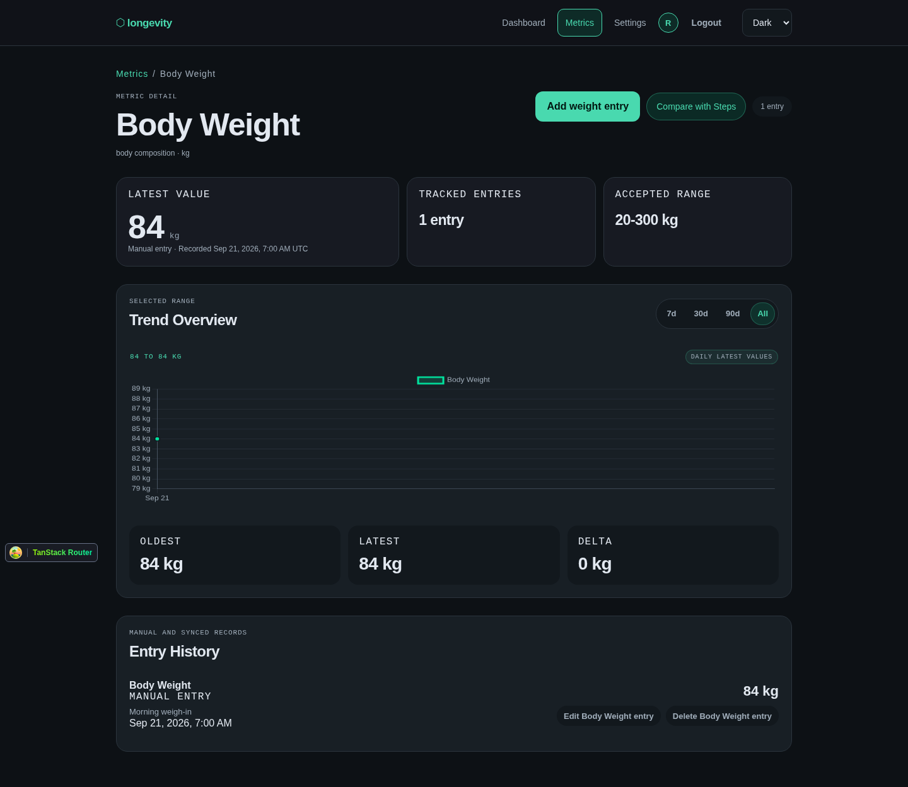
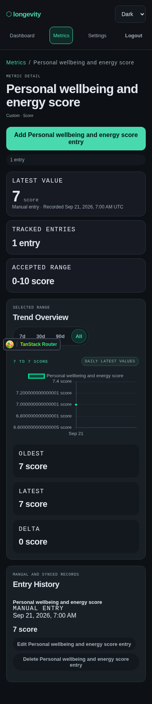
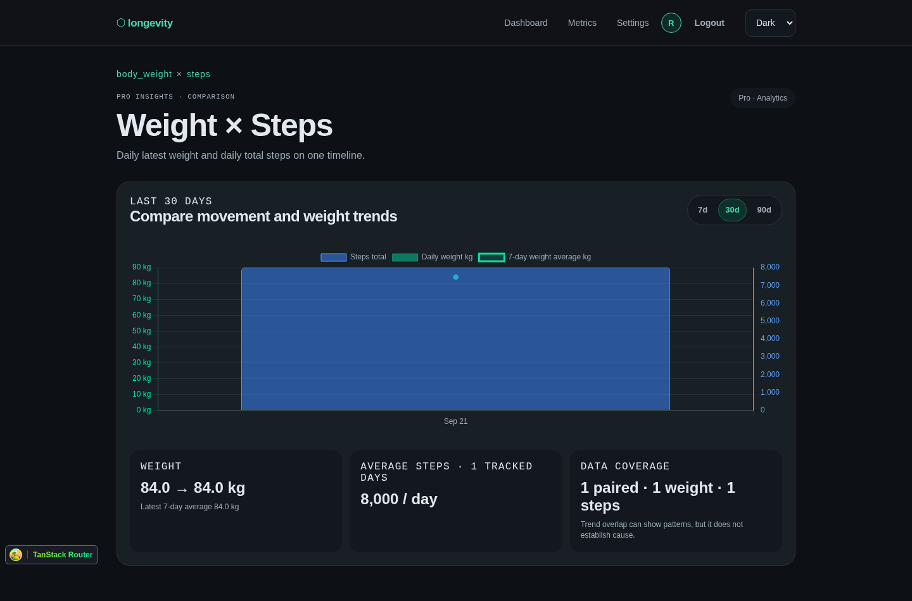
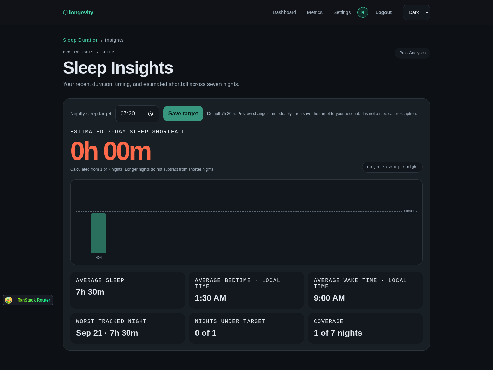
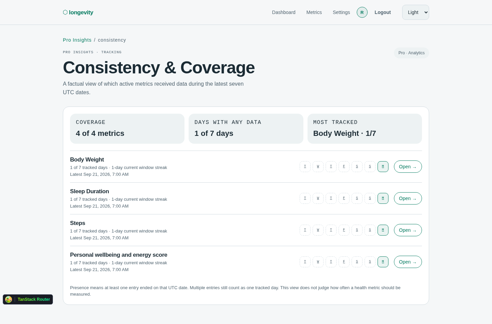
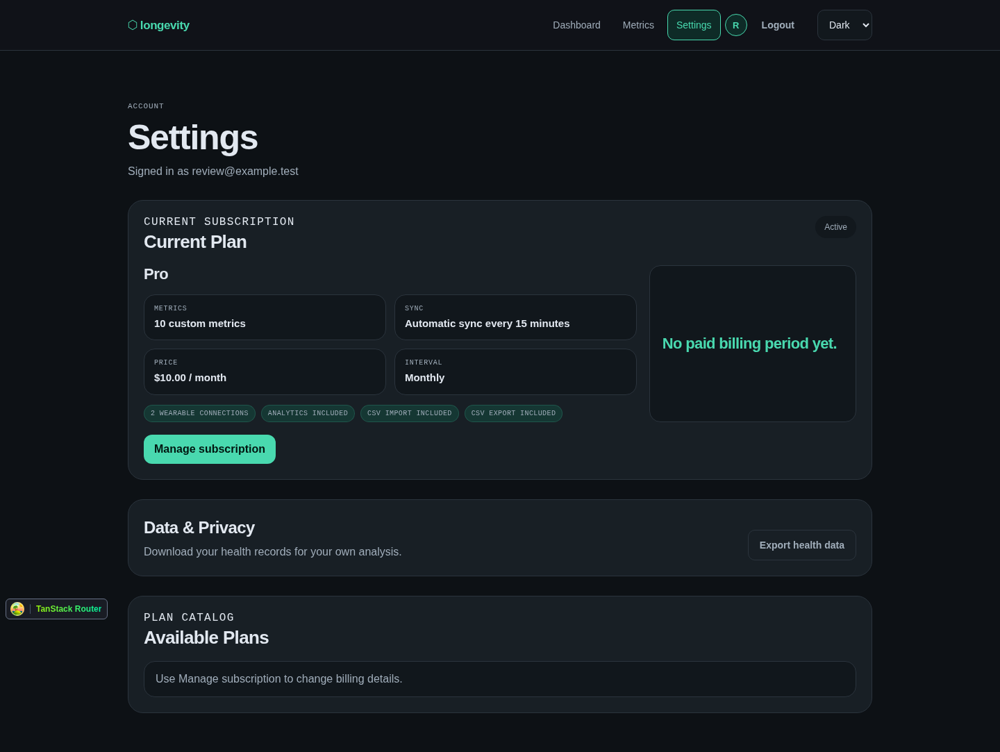
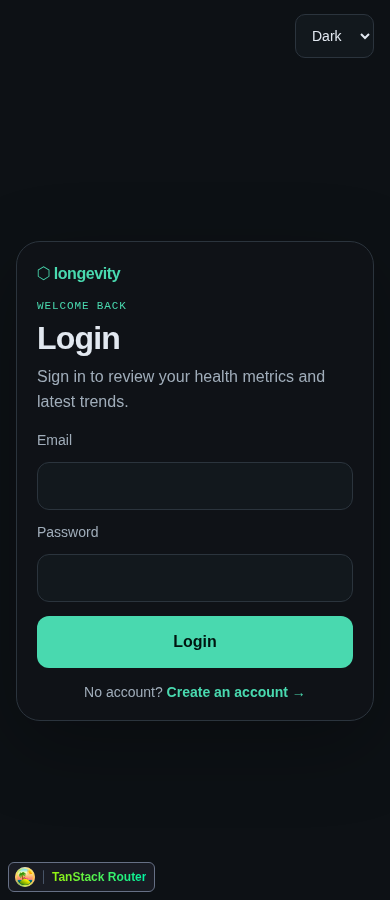
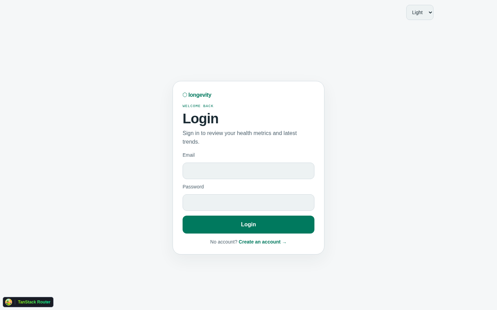
Rendered with @pierre/diffs (needs network for the esm.sh import; paths + line numbers below carry the same info offline).
frontend/src/routes/analytics.weight-steps.tsx:60-70: slug literals in breadcrumbformatMetricValueWithUnit in features/metrics/metric-entry-formatters.ts) to Chart.js tick callbacks for
unknown/custom slugs — e.g. a shared formatAxisTick(value, slug) that trims float noise (up to N significant decimals),
applied in metric-trend-chart.tsx and weight-steps-overlay-chart.tsx. This closes the documented follow-up in 20-frontend-development.md:47-49.